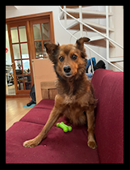
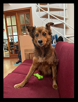

ggplot2 Communication - Complete Lessons
ModuleIII: 2025_r4ds-ggplot2
R for data science workshop (r4ds):

This module is based on the Data visualization chapter in Hadley Wickham’s book 2nd edition of ‘R 4 data science’(see README.md).

This module is based on the Data visualization chapter in Hadley Wickham’s book 2nd edition of ‘R 4 data science’(see README.md).